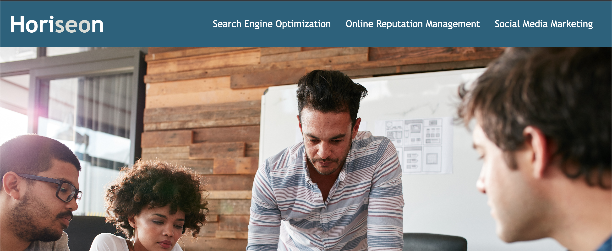

I am highly motivated for continued education. I started out on a journey to go to medical school but as my bachelors continued I realized that I have a passion for chemical lab work. I completed an organic synthesis capstone in my senior year and found that lab work would be something I want to do in the future. My drive to learn didn't stop with chemical work though. I see how computers are being integrated in almost every aspect of our world so I thought a background in computer science could help drive progress forward. I am currently enrolled in a computer coding bootcamp through the University of Washington. It will be completed in February of 2023. After, I plan to pursue a career in the field. I also have a passion for learning languages and I am currently self teaching Norwegian. I have previously studied Spanish, French and German.
My first project consisted of making sure the UIs are functioning properly and increasing accessibility by adding alt tags for individuals who are imapired. As well as cleaning the code to be in a logical order.